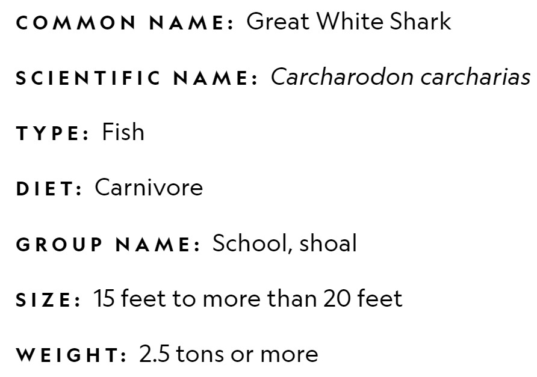

The grey reef shark (Carcharhinus amblyrhynchos, sometimes misspelled amblyrhynchus or amblyrhinchos) is a species of requiem shark, in the family Carcharhinidae. One of the most common reef sharks in the Indo-Pacific, it is found as far east as Easter Island and as far west as South Africa. This species is most often seen in shallow water near the drop-offs of coral reefs. It has the typical "reef shark" shape, with a broad, round snout and large eyes. It can be distinguished from similar species by the plain or white-tipped first dorsal fin, the dark tips on the other fins, the broad, black rear margin on the tail fin, and the lack of a ridge between the dorsal fins. Most individuals are less than 1.88 m (6.2 ft) long. The grey reef shark has a streamlined, moderately stout body with a long, blunt snout and large, round eyes. The upper and lower jaws each have 13 or 14 teeth (usually 14 in the upper and 13 in the lower). The grey reef shark is a fast-swimming, agile predator that feeds primarily on free-swimming bony fishes and cephalopods. Its aggressive demeanor enables it to dominate many other shark species on the reef, despite its moderate size. Many grey reef sharks have a home range on a specific area of the reef, to which they continually return. However, they are social rather than territorial. During the day, these sharks often form groups of five to 20 individuals near coral reef drop-offs, splitting up in the evening as the sharks begin to hunt. Adult females also form groups in very shallow water, where the higher water temperature may accelerate their growth or that of their unborn young. Like other members of its family, the grey reef shark is viviparous, meaning the mother nourishes her embryos through a placental connection. Litters of one to six pups are born every other year.
The grey reef shark is limited to the Pacific and Indian Oceans. In the Indo-Pacific, it is found in Northern South Africa, the waters off Madagascar and in the Mauritius-Seychelles region and up into the Red Sea. In the western Pacific Ocean, it ranges from southern China to northern Australia and the Tuamoto Archipelago (Compagno et al. 2005, Smale 2009). It is one of the most common reef sharks in the Pacific Ocean, along with the blacktip reef shark (Carcharhinus melanopterus) and the whitetip reef shark (Triaenodon obesus) (Compagno 1984). However, it is primarily located in areas that lack extensive human activity.

Despite their huge size, blue whales feed on relatively small prey, primarily tiny shrimp-like animals called krill. Like some other whales, blue whales possess baleen—stiff plates made of hairlike structures—in place of teeth. When they feed, they expel seawater out of their mouths through the baleen, and the krill stay trapped inside. A blue whale can eat up to 7,715 pounds of krill per day. Young blue whales consume 100 to 150 gallons of milk each day from their mother.
Highly adapted predators, their mouths are lined with up to 300 serrated, triangular teeth arranged in several rows, and they have an exceptional sense of smell to detect prey. They even have organs that can sense the tiny electromagnetic fields generated by animals. Their prey includes other sharks, crustaceans, molluscs, and sea birds. Larger whtie sharks will also prey on sea lions, seals, and small toothed whales like orcas. The species has even been seen feeding on dead whales. Of the 100-plus annual shark attacks worldwide, a third to a half are attributed to great white sharks. Most of these, however, are not fatal. Research finds that great whites, which are naturally curious, often "sample bite" then release their human target. It's not a terribly comforting distinction, but it does indicate that humans are not actually on the great white's menu. Fatal attacks, experts say, are typically cases of mistaken identity: Swimmers and surfers can look a lot like their favorite prey—seals—when seen from below.
Sharks are caught for their fins